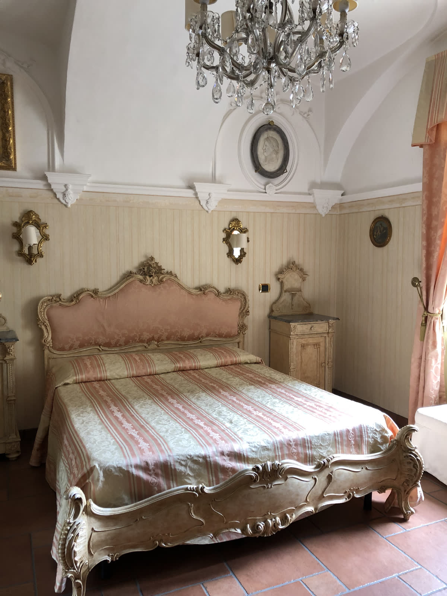
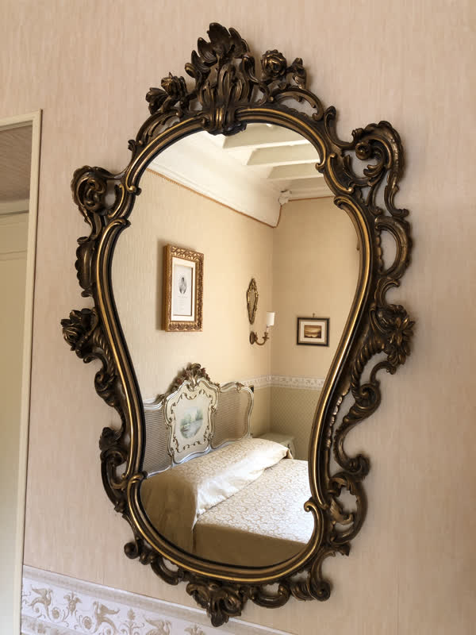

Capitolo I
Camere delle Regine
Nel palazzo del 1715, a pochi passi da Piazza Savoia. Le camere sono tutte diverse tra loro, arredate con mobili d’epoca, e ognuna porta il nome di una Regina di Casa Savoia.
- Ingresso
- Via del Carmine 1B
- Camere
- Standard, Superior e Suite, con bagno privato
- Colazione
- Inclusa, nella Sala dei Marmi
- Accesso
- Primo piano, una rampa di scale, senza ascensore
- Tariffe
- Da 110 a 135 € a notte, secondo stagione